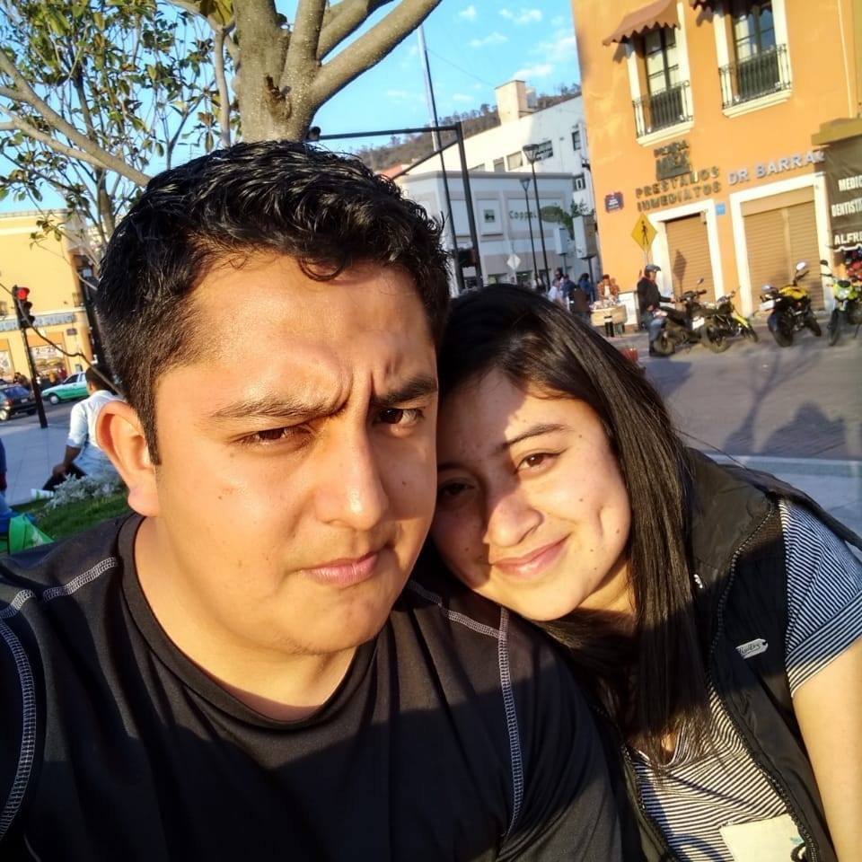

CV de Aldo Peralta
Fullstack Web Developer
Con mas de 4 años de experiencia trabajando en el Back y Frontend.
Educación
-
Ingenieria en Tecnologias de la Información y Comunicación
- 2016 - 2018 Universidad Tecnologica de Tulancingo
-
T.S.U. en Tecnologías de la Información y Comunicación y Comunicación Área: Sistemas Informaticos
- 2014 - 2016 Universidad Tecnologica de Tulancingo

Experiencia Profesional
-
Director de Tecnologia e Innovación
- 2021 - Actualmente CIDDEI Tulancingo
-
Jefe de Departamento de Informatica
- 2020 - Actualmente Gobierno del Estado de Hidalgo
Otros
- FundadorInovalab Soluciones Tecnologicas
- Trabajo Colaborativo Campus Party Mexico
- Jugador de Voleibol
- Ser muy cabron